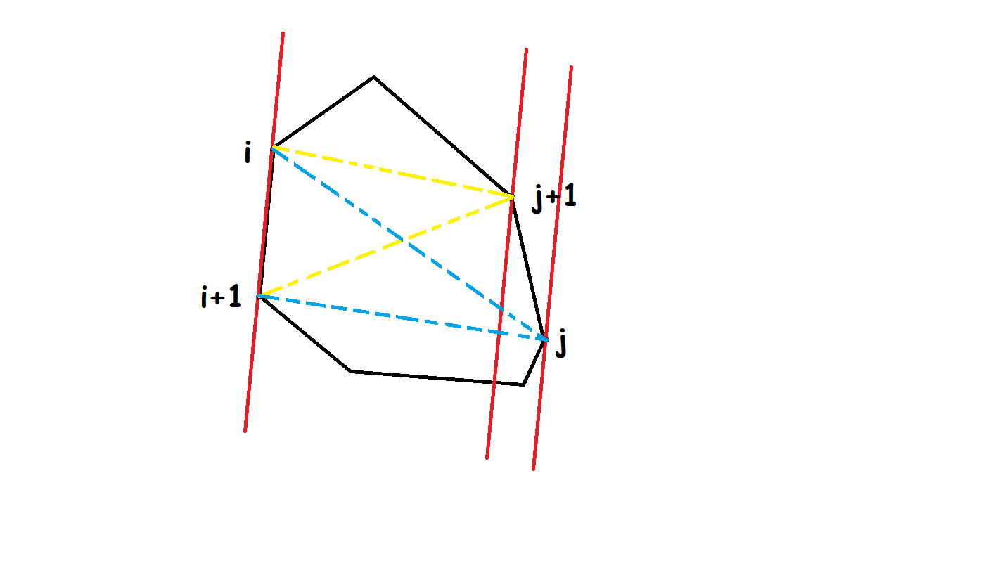
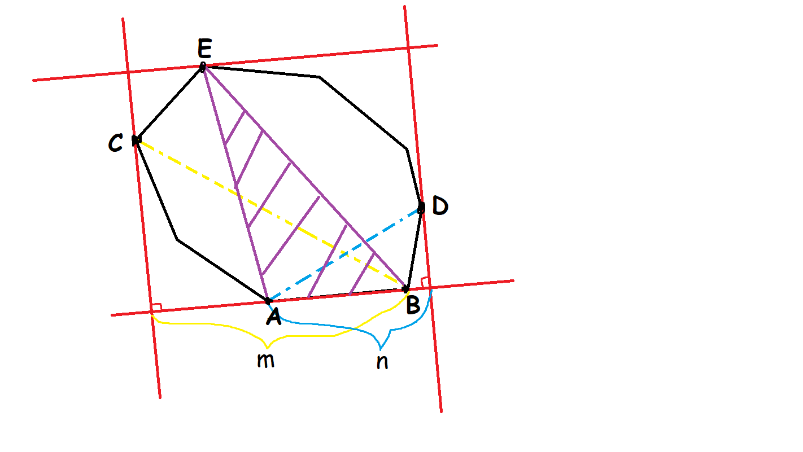

Rotating calipers
本页面将主要介绍旋转卡壳．
引入
旋转卡壳（Rotating Calipers，也称「旋转卡尺」）算法，在凸包算法的基础上，通过枚举凸包上某一条边的同时维护其他需要的点，能够在线性时间内求解如凸包直径、最小矩形覆盖等和凸包性质相关的问题．
???+ note "算法中文名称" 该算法比较常见的中文名是「旋转卡壳」．可以理解为：根据我们枚举的边，可以从每个维护的点画出一条或平行或垂直的直线，为了确保对于当前枚举的边的最优性，我们的任务就是使这些直线能将凸包正好卡住．而边通常是按照向某一方向旋转的顺序来枚举，所以整个过程就是在边「旋转」，边「卡壳」．
其英文名「rotating calipers」的直译应为「旋转卡尺」，其中「calipers」的意思是「卡尺」．第一次提出该术语的论文[^ref1]原意为：使用一个可动态调整的「卡尺」夹住凸包后，绕凸包「旋转」该「卡尺」．
求凸包直径
???+ note "例题 1 :Luogu P1452 Beauty Contest G" 给定平面上 $n$ 个点，求所有点对之间的最长距离．（$2\leq n \leq 50000,|x|,|y| \leq 10^4$）
过程
首先使用任何一种凸包算法求出给定所有点的凸包，有着最长距离的点对一定在凸包上．而由于凸包的形状，我们发现，逆时针地遍历凸包上的边，对于每条边都找到离这条边最远的点，那么这时随着边的转动，对应的最远点也在逆时针旋转，不会有反向的情况，这意味着我们可以在逆时针枚举凸包上的边时，记录并维护一个当前最远点，并不断计算、更新答案．
求出凸包后的数组自然地是按照逆时针旋转的顺序排列，不过要记得提前将最左下角的 1 节点补到数组最后，这样在挨个枚举边 $(i,i+1)$ 时，才能把所有边都枚举到．

枚举过程中，对于每条边，都检查 $j+1$ 和边 $(i,i+1)$ 的距离是不是比 $j$ 更大，如果是就将 $j$ 加一，否则说明 $j$ 是此边的最优点．判断点到边的距离大小时可以用叉积分别算出两个三角形的面积（如图，黄、蓝两个同底三角形的面积）并直接比较．
实现
???+ note "核心代码" === "C++" ```cpp int sta[N], top; // 将凸包上的节点编号存在栈里，第一个和最后一个节点编号相同
ll pf(ll x) { return x * x; }
ll dis(int p, int q) { return pf(a[p].x - a[q].x) + pf(a[p].y - a[q].y); }
ll sqr(int p, int q, int y) { return abs((a[q] - a[p]) * (a[y] - a[q])); }
ll mx;
void get_longest() { // 求凸包直径
int j = 3;
if (top < 4) {
mx = dis(sta[1], sta[2]);
return;
}
for (int i = 1; i < top; ++i) {
while (sqr(sta[i], sta[i + 1], sta[j]) <=
sqr(sta[i], sta[i + 1], sta[j % top + 1]))
j = j % top + 1;
mx = max(mx, max(dis(sta[i + 1], sta[j]), dis(sta[i], sta[j])));
}
}
```
=== "Python"
```python
sta = [0] * N
top = 0 # 将凸包上的节点编号存在栈里，第一个和最后一个节点编号相同
def pf(x):
return x * x
def dis(p, q):
return pf(a[p].x - a[q].x) + pf(a[p].y - a[q].y)
def sqr(p, q, y):
return abs((a[q] - a[p]) * (a[y] - a[q]))
def get_longest(): # 求凸包直径
j = 3
if top < 4:
mx = dis(sta[1], sta[2])
return
for i in range(1, top):
while sqr(sta[i], sta[i + 1], sta[j]) <= sqr(
sta[i], sta[i + 1], sta[j % top + 1]
):
j = j % top + 1
mx = max(mx, max(dis(sta[i + 1], sta[j]), dis(sta[i], sta[j])))
```
求最小矩形覆盖
给定一些点的坐标，求能够覆盖所有点的最小面积的矩形．（$3\leq n \leq 50000$）
过程
有了上一道题做铺垫，这道题比较直观的想法仍然是使用旋转卡壳法，不过这次要求的是面积，像上一题一样只维护一个最优点就只能找到一对距离最小的平行线，我们还需要确定矩形的左右边界．所以这次我们需要维护三个点：一个在所枚举的直线对面的点、两个在不同侧面的点．对面的最优点仍然是用叉积算面积来比较，此时比较面积就是在比较这个矩形的一个边长．侧面的最优点则是用点积来比较，因为比较点积就是比较投影的长度，左右两个投影长度相加可以代表这个矩形的另一个边长．这两个边长的最优性相互独立，因此找到三个最优点的位置就能够确定以当前边所在直线为矩阵的一条边时，能覆盖所有点的矩形最小面积．

最后统计答案时，如果题目没有要求将四个顶点都求出来，其实有一种较为巧妙的利用叉积和点积的方式直接算出矩阵的面积．设紫色部分面积的两倍为 $S$，最后的面积就是
$$ S\times (|\overrightarrow{AD}\cdot \overrightarrow{AB}|+|\overrightarrow{BC}\cdot \overrightarrow{BA}|-|\overrightarrow{AB}\cdot \overrightarrow{BA}|)/|\overrightarrow{AB}\cdot \overrightarrow{BA}| $$
实现
必要的求凸包过程略去，这里贴出本题核心代码：
???+ note "核心代码"
=== "C++"
cpp
void get_biggest() {
int j = 3, l = 2, r = 2;
double t1, t2, t3, ans = 2e10;
for (int i = 1; i < top; ++i) {
while (sqr(sta[i], sta[i + 1], sta[j]) <=
sqr(sta[i], sta[i + 1], sta[j % top + 1]))
j = j % top + 1;
while (dot(sta[i + 1], sta[r % top + 1], sta[i]) >=
dot(sta[i + 1], sta[r], sta[i]))
r = r % top + 1;
if (i == 1) l = r;
while (dot(sta[i + 1], sta[l % top + 1], sta[i]) <=
dot(sta[i + 1], sta[l], sta[i]))
l = l % top + 1;
t1 = sqr(sta[i], sta[i + 1], sta[j]);
t2 = dot(sta[i + 1], sta[r], sta[i]) + dot(sta[i + 1], sta[l], sta[i]);
t3 = dot(sta[i + 1], sta[i + 1], sta[i]);
ans = min(ans, t1 * t2 / t3);
}
}
=== "Python"
```python
def get_biggest():
j = 3
l = 2
r = 2
ans = 2e10
for i in range(1, top):
while sqr(sta[i], sta[i + 1], sta[j]) <= sqr(
sta[i], sta[i + 1], sta[j % top + 1]
):
j = j % top + 1
while dot(sta[i + 1], sta[r % top + 1], sta[i]) >= dot(
sta[i + 1], sta[r], sta[i]
):
r = r % top + 1
if i == 1:
l = r
while dot(sta[i + 1], sta[l % top + 1], sta[i]) <= dot(
sta[i + 1], sta[l], sta[i]
):
l = l % top + 1
t1 = sqr(sta[i], sta[i + 1], sta[j])
t2 = dot(sta[i + 1], sta[r], sta[i]) + dot(sta[i + 1], sta[l], sta[i])
t3 = dot(sta[i + 1], sta[i + 1], sta[i])
ans = min(ans, t1 * t2 / t3)
```
练习
- POJ 3608. Bridge Across Islands
- 2011 ACM-ICPC World Finals, Problem K. Trash Removal
- ICPC WF Moscow Invitational Contest - Online Mirror, Problem F. Framing Pictures
参考资料与注释
[^ref1]: Toussaint, Godfried T. (1983). "Solving geometric problems with the rotating calipers". Proc. MELECON '83, Athens. CiteSeerX 10.1.1.155.5671
-
http://www-cgrl.cs.mcgill.ca/~godfried/research/calipers.html
-
Shamos, Michael (1978). "Computational Geometry" (PDF). Yale University. pp. 76–81.